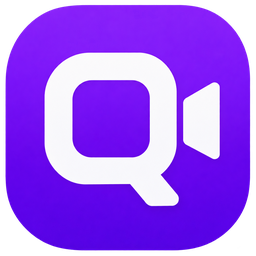
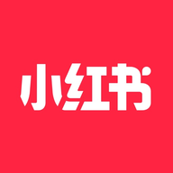
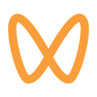
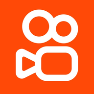
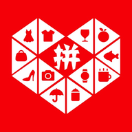
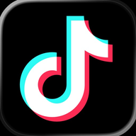
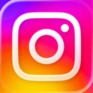
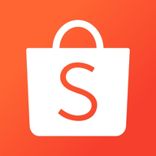

一个镜头，
多种构图。
横屏竖屏，同时取景
同一画面一路保留横屏全景，另一路裁成竖屏特写。每路独立调整取景范围。
每个直播间，都有自己的画面
分别调整亮度与色彩，选用滤镜，叠加文字、图片或 Logo。
摄像头和网络视频，都能接入
接入本地摄像头，也可通过 SRT 接收手机推流，或通过 RTSP 接入网络摄像机。
同一帧直播样图，两种通道画幅。
多平台开播
用现有的 Windows 电脑，加上一台摄像头，就能 0 元搭好多平台直播。启用系统输出后，一个镜头最多分出 10 路虚拟摄像头，各开播工具各选一路，无需另购多开采集卡或安装 OBS。

QCam
QCam 02小红书国内平台
- 抖音

视频号
快手- 小红书
- 淘宝

拼多多
海外平台

TikTok- YouTube

Instagram
Shopee
接入前，请确认账号已取得开播权限，且该平台的桌面开播工具支持选择虚拟摄像头。
三步调好
通道画面。
打开右上角「设置」，在「常规」中点「打开样图…」，选一张本地图片。各通道会显示同一个画面。
在第二路点「竖屏」，打开「裁剪」并选择「填充」。用缩放和位置滑块，把主播放在竖屏画面中央。
点「素材」→「添加素材」→「文字」，输入「轻映直播间」。选好字体和描边后点「添加」，字幕只应用到这一路。
跟着工作台，
一步步操作。
点击通道列表末尾的「添加通道」，工作台会出现新卡片。再在新通道点击「竖屏」，其他通道保留原来构图。
常见问题
QCam 收费吗？0 元搭建需要什么？
QCam 永久免费。已有 Windows 电脑、可用摄像头和网络，就可以用 QCam 把一路画面分给多个直播间。无需另装 OBS，也无需为每路添置采集卡。电脑、摄像头、网络和平台服务本身的费用另计。
怎样把画面接入直播平台？
启用 QCam 的系统虚拟摄像头组件，调好画幅并开启目标通道。打开平台的桌面开播工具，添加摄像头并选择对应设备，例如「QCam 01」。直播期间保持 QCam 和这一路通道开启。
每个直播间的麦克风怎么选？
QCam 的虚拟摄像头传送视频。在各平台的桌面开播工具里，分别选择要使用的实体麦克风或声卡。QCam 的音频检测可用来查看输入电平。
怎样在电脑上启用虚拟摄像头？
在 Windows 版 QCam 中打开「设置」→「视频输出」，点击「安装虚拟摄像头组件」。安装后，在工作台开启所需通道。
直播伴侣里没有画面，怎么排查？
打开「设置」→「常规」里的「测试画面」。确认通道保留了「主摄像头」素材并已开启输出，再在直播伴侣选中相应设备。看到测试色条后点「退出测试」，检查实体摄像头的连接与权限。
切到竖屏后，为什么还显示横屏？
正在输出的通道切换画幅时会重新注册设备。在直播伴侣中重新选择这一路虚拟摄像头。如果仍显示旧画幅，移除该摄像头来源，再重新添加。
手机推流中断，怎样恢复？
在 SRT 监听模式下，QCam 会重新等待推流。先确认手机和电脑所在的局域网可以互访，再从手机重新推流。改过地址或端口时，在「网络视频源」中点「应用并重新连接」。点「切回摄像头」可恢复实体设备输入。
下载 QCam
Windows 版 1.0.0 · 免费下载
macOS
macOS 版暂停发布。